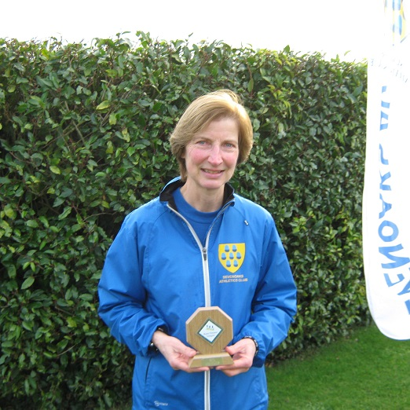
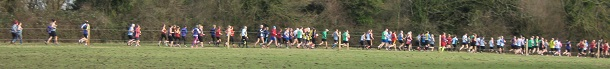

The Sevenoaks AC team of 19 runners ploughed through the mud at Nurstead Court on 28th January to finish sixth combined team, with the men sixth and the women eighth. The women just managed to field the required four runners, as Jacqui O'Reilly, Pauline Dalton and Grace Manzotti were all injured, but Vanessa Gilmartin had a brilliant run in eighth place (3rd W40) to lead the SAC women home. She was backed up by Heather Fitzmaurice,

Sally Shewell (3rd W55) and Anna Humphrey-Taylor. The men were similarly depleted, but Andy Ashlee finished strongly for first SAC man in 38th, one place ahead of Keith Dowson, with the rest of the scorers packing closely behind. James Graham was second M60, Jim Fitzmaurice 3rd M70 (1st M75) and John Denyer 3rd M65.
There was a presentation before the race when Sally Shewell was awarded a trophy for completing 100 KFL races - more than 500 miles of mud covered on behalf of Sevenoaks AC!
After six races, the combined team is still hanging on in second place, with the women fourth and the men also second. The SAC results were:
| Ov Pos | Lg Pos | Runner | Age | Time | Club | Rating | # Races |
|---|---|---|---|---|---|---|---|
| 38 | 37 | Andy Ashlee | 48 | 35:12 | Sevenoaks AC | 87.00 | 24 |
| 39 | 38 | Keith Dowson | 54 | 35:16 | Sevenoaks AC | 86.64 | 13 |
| 46 | 45 | Andrew Mead | 49 | 35:38 | Sevenoaks AC | 84.12 | 32 |
| 66 | 64 | Russell Crane | 35 | 36:41 | Sevenoaks AC | 77.26 | 2 |
| 75 | 73 | Nick Humphrey-Taylor | 45 | 37:03 | Sevenoaks AC | 74.01 | 3 |
| 78 | 76 | Chris Desmond | 54 | 37:12 | Sevenoaks AC | 72.92 | 79 |
| 101 | 95 | James Graham | 64 | 38:28 | Sevenoaks AC | 66.06 | 21 |
| 104 | 98 | James Wright | 49 | 38:45 | Sevenoaks AC | 64.98 | 24 |
| 113 | 8 | Vanessa Gilmartin | 42 | 39:08 | Sevenoaks AC | 94.49 | 6 |
| 117 | 107 | Tony Waldron | 50 | 39:24 | Sevenoaks AC | 61.73 | 23 |
| 152 | 18 | Heather Fitzmaurice | 48 | 40:57 | Sevenoaks AC | 86.61 | 70 |
| 171 | 150 | John Denyer | 69 | 41:38 | Sevenoaks AC | 46.21 | 45 |
| 235 | 196 | Simon Hallpike | 64 | 45:10 | Sevenoaks AC | 29.60 | 46 |
| 250 | 45 | Sarah Shewell | 58 | 45:50 | Sevenoaks AC | 65.35 | 101 |
| 327 | 250 | Lionel Stielow | 69 | 51:15 | Sevenoaks AC | 10.11 | 7 |
| 336 | 255 | James Fitzmaurice | 75 | 52:15 | Sevenoaks AC | 8.30 | 66 |
| 348 | 91 | Anna Humphrey-Taylor | 48 | 53:21 | Sevenoaks AC | 29.13 | 3 |
| 361 | 261 | Peter Nuttall | 45 | 55:23 | Sevenoaks AC | 6.14 | 22 |
The full results are here. The final race of the series is on Sunday, 4th February, at Blean Woods, Rough Common, near Canterbury and a big turnout is needed if we are to hold on to second place.
